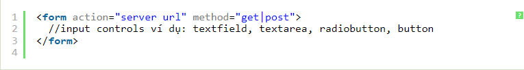
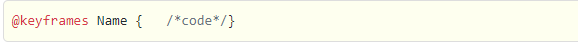

Một HTML Form là một phần của trang web có chứa các điều khiển như các trường văn bản, các trường mật khẩu, các checkbox, các radio button, submit button, các menu... HTML Form là phương tiện cho người dùng nhập dữ liệu được gửi đến máy chủ để xử lý.
1.2. Tại sao cần sử dụng HTML FormHTML Form được sử dụng khi bạn muốn thu thập một số dữ liệu của người truy cập trang web. Ví dụ: Nếu người dùng muốn mua một số mặt hàng trên online, họ phải điền vào form các thông tin như địa chỉ giao hàng và chi tiết thẻ tín dụng / thẻ ghi nợ để có thể gửi hàng đến địa chỉ đó.
1.3. Khai báo HTML FormHTML Form được khai báo như sau:
Transforms là thuộc tính được sử dụng để xác định các chuyển đổi 2 chiều, 3 chiều, có thể là chuyển đổi xoay, thay đổi tỉ lệ, hình dạng, di chuyển,... Theo 1 cách nói khác, chúng ta sẽ học cách thay đổi hình dạng kích thước và vị trí vật thể bằng Transforms.
Các dạng transforms:Bởi vì có thể xác định các chuyển đổi 2 chiều và 3 chiều, nên sẽ có 2 dạng transforms: 2D transforms và 3D transforms.
2D Transform3D transform tương tự như 2D transform, nhưng có bổ sung thêm 1 trục Z với chiều hướng vuông góc màn hình tới mắt chúng ta.
Để có thể tạo được môi trường 3D, cần có đầu tiên là thuộc tính perspective.Animation sử dụng để tạo hiệu ứng di chuyển cho các phần tử và được ứng dụng khá nhiều trong các website hiện nay.
Để tạo một chuyển động Animation, bạn cần phải có các keyframe. Mỗi keyframe sẽ được chạy ở một thời điểm xác định và trong keyframe đó nó quy định việc phần tử sẽ di chuyển ra sao.
Các thuộc tính quy định các chi tiết của hiệu ứngBên trong quy tắc này, bạn xác định các keyframe để quy định việc phần tử sẽ chuyển động ra sao tại mỗi thời điểm nhất định.
Cú pháp của keyframe:
Trong đó:
Để chuyển động xảy ra cần phải kết nối @keyframes với phần tử.
Lưu ý: Để tạo ra hiệu ứng Animation, bạn phải xác định ít nhất hai điều:
Sử dụng transition để thiết lập biến đổi liên tục các giá trị thuộc tính CSS tạo ra hiệu ứng động trên màn hình, liệt kê các thuộc tính động với transition-property, thời gian diễn ra hiệu ứng với transition-durationSử dụng transition để thiết lập biến đổi liên tục các giá trị thuộc tính CSS tạo ra hiệu ứng động trên màn hình, liệt kê các thuộc tính động với transition-property, thời gian diễn ra hiệu ứng với transition-duration
Các thuộc tính quy định các chi tiết của hiệu ứngTrong CSS có các thiết lập để giá trị của một thuộc tính (như chiều rộng phần tử width) thay đổi từ giá trị này sang giá trị khác thể hiện ngay ngay trong trình duyệt một cách mềm mại liên tục (hiệu ứng động). Một hiệu ứng biến hình là một hiệu ứng động, giá trị của một thuộc tính cụ thể (màu sắc, kích thước ...) được thay đổi mềm mại liên tục chứ không thay đổi một cách đột ngột.